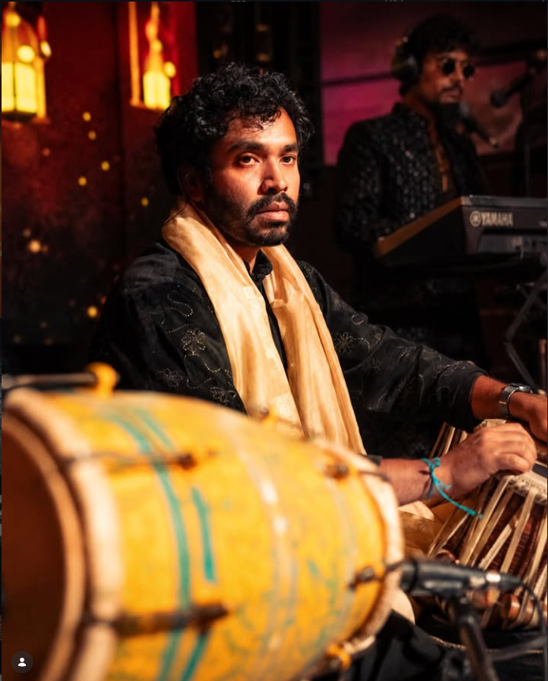

Sufi
Poetry that aches, melodies that rise slowly, and a stillness that lands deep.
Poetry that aches, melodies that rise slowly, and a stillness that lands deep.
Folk-rooted swing, dhol-driven release, and the joy of every voice joining in.
Grit in the strings, heat in the drums, and familiar songs made fiercely new.

Notes on devotion, noise, and the kind of nights people carry home with them.
The sound
How Sufi ache, Punjabi celebration, and rock grit become one living sound in the room.
Read story →Celebrations
Live music that moves with the people, the rituals, and the rising temperature of the night.
Read story →The collective
Inside the exchange between tabla, dholak, strings, keys, and voices that refuse to stand still.
Read story →Catch The Karvaan Project live—where the lights are low, the rhythm is high, and the night refuses to end early.
Tell us what you are gathering for. We will shape a set with soul, sweat, silence, and the right kind of noise.